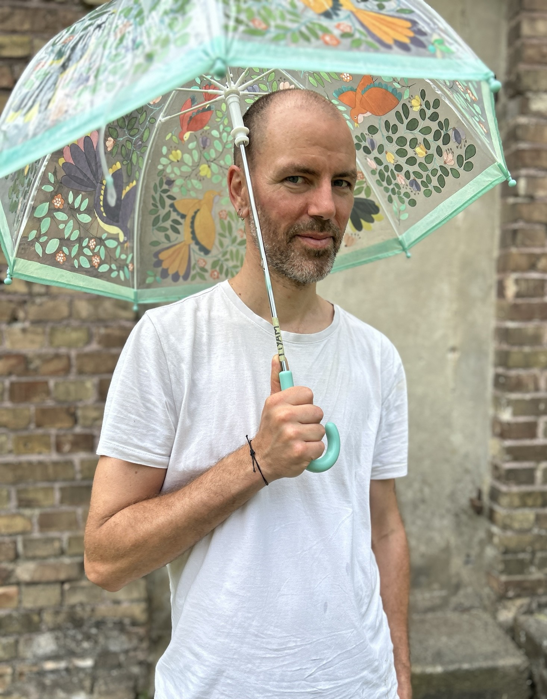

Couples & Friends
145 € · 90 min.
Emotion-focused, systemic support for couples and close relationships.
Meike Behrends & Jan Drunkenmölle-Nazeri
I’m Meike Behrends, a systemic therapist in Berlin-Kreuzberg, and I support you through crises and change processes. Together we look at what is currently weighing on you—whether as a couple, as a family, in friendships, or individually. As a systemic therapist, I assume that you already carry the resources for change within you. My role is to support you on equal footing in opening up new perspectives and reviewing old beliefs. This can help you gain more clarity about inner patterns and roles, and regain room for action.
I aim for a counseling space where diversity is seen and valued as a strength—regardless of sexual orientation, origin, gender, or lifestyle. I work in Berlin-Kreuzberg or online, in English and German.

My work is
We look at your concerns in the context of your relationships and life circumstances. Which roles and patterns do you find yourself returning to? What feels difficult right now? It’s important to me to also focus on your strengths so you can reconnect with your inner resources.
Conflicts in relationships often arise not only from what is said, but from deeper emotional needs such as closeness, safety, and recognition. In conflict these needs can be covered over, and it can feel hard to sense and express them. When you regain access to these needs, new connection can become possible.
I am attentive and sensitive to the effects of distressing experiences. Your personal boundaries, your experiences, and your pace are central. It matters to me that you can experience stability and safety again.
In relationships we often find ourselves in recurring—and sometimes distressing—dynamics that are difficult to change alone. I support you in recognizing stuck patterns, understanding each other’s inner experience, and changing interactions step by step.
I work with the Emotionally Focused Therapy approach (EFT). The aim is to uncover the feelings and needs that underlie these dynamics. When they are seen and appreciated, a new sense of safety and connection can emerge. The focus is not on blame, but on understanding and developing shared solutions.
If you decide to separate, I also offer support and guidance through the separation process.
Topics

Concerns or symptoms of one family member are often not an individual problem, but signals of shared patterns or tension in the family system. Changes such as the birth of a child, illness, or loss can require the family to reorganize and can create pressure.
Together we explore these connections and previously unspoken needs, develop new perspectives, and strengthen cooperation within the family. I work in a multi-partial way, meaning I take each involved person’s perspective seriously and with appreciation.
I enjoy working with different systems, for example adult siblings, parent–child constellations, chosen family, and co-parenting.
Topics

My services are for people who feel stuck, overwhelmed, or are going through a personal crisis.
How we perceive ourselves and relate to ourselves is often shaped by beliefs and experiences from our family of origin. What used to be helpful or necessary in the past can limit us today and make change harder. That’s why we look together at your relationships with other people as well as your relationship with yourself.
Possible topics

I'm Jan Drunkenmölle-Nazeri, systemic counselor* and supervisor* in Berlin-Kreuzberg. For professional and social contexts, I offer supervision for teams, groups, and individuals. This includes, in particular, regular case supervision—happy to meet in person or online, in English or German. For smaller groups and collectives, I offer a limited number of discounted solidarity spots.
I understand my counseling work as a contribution to personal and collective growth. My role is to hold a space and set a frame on equal footing that supports your own processes and strengthens your ability to act in the long term. Your concerns and goals are at the center of supervision. The aim is personal and collective relief through structured supervision.
I work from a systemic, trauma- and power-sensitive stance. In a free initial conversation, we can clarify content and framework before you decide to work with me.

145 € · 90 min.
Emotion-focused, systemic support for couples and close relationships.
90 € · 60 min.
Systemic individual sessions for clarity, resources, and change.
145 € · 90 min.
Systemic family sessions and parenting support.
90 € · 60 min.
Systemic Supervision
It matters to me that people with a limited budget can also access therapy. If your financial situation is currently restricted, please talk to me—we’ll look for a solution together.
If you’d like, we can start with a free 15‑minute introductory call to clarify whether my offer is a good fit for you.
All prices include VAT.
Meike Behrends
I work independently as a systemic therapist and counselor and am recognized by the Systemische Gesellschaft (SG), the umbrella organization for systemic therapists in Germany. I have also completed a foundational training in Emotionally Focused Couple Therapy (EFT).
Alongside my private practice, I have worked for many years in a counseling center for refugees in Berlin. Further formative experience comes from supporting families in crisis through social-pedagogical family assistance. Ongoing supervision and intervision are important to me in order to reflect on and continuously develop my work.
I am currently training further in trauma education. I hold a Bachelor’s and Master’s degree in political and social sciences.
Jan Drunkenmölle-Nazeri
I work independently as a systemic counselor* and am recognized by the Systemische Gesellschaft (SG), the umbrella organization for systemic therapists in Germany. Since 2007, I have worked on anti-racism in education policy, including in schools, social work, and social movements. In 2026, I am completing advanced training as a systemic supervisor* at SIA (Systemisches Institut für Achtsamkeit). I hold a Bachelor’s degree in Politics and Philosophy.
Alongside my freelance work, I have been working since 2018 as a specialist counselor* at a psychosocial center for refugees in Berlin. Collective and power-critical processes in various groups and projects shape my life and flow into my work. Ongoing intervision, teaching supervision, and further training are important to me in order to reflect on and continuously develop my work.
I am queer. I am white and was socialized male. I engage extensively with racism and hegemonic masculinity, as well as care work as a parent.